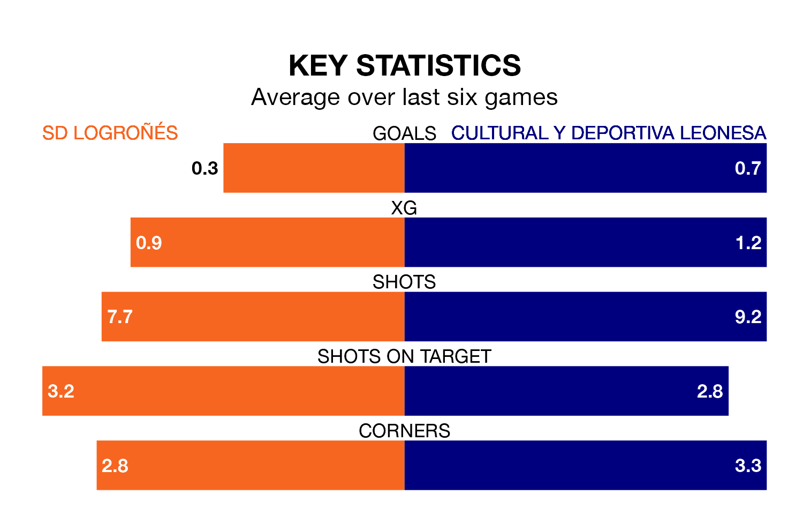

Cultural y Deportiva Leonesa face SD Logroñés on Sunday seeking to protect their long unbeaten run in Primera Division RFEF Group 1.
Cultural y Deportiva Leonesa are unbeaten in five, with one win and four draws, ahead of the 5pm kick-off.
They face a Logroñés team who have drawn one and lost four over the same number of games.
In Miguel Bañuz Antón, Cultural y Deportiva Leonesa can rely on one of the league's safest pair of hands. He has kept 13 clean sheets in his 25 appearances this season, and no 'keeper has prevented the opposition scoring more often in Primera Division RFEF Group 1.
In Logroñés's net, Ander Iruarrizaga Díez has four clean sheets in 23 games. He has conceded a goal every 63 minutes, nearly three times as often as the 173 minutes between goals for Bañuz Antón.
The home side are 19th in the table after 30 games, of which they have won seven and drawn five, earning 26 points.
The visitors are 13 places ahead of Logroñés in sixth, with 12 wins and 12 draws putting them on 48 points.
With 21 goals in 30 games so far this season, Logroñés are the league's lowest scorers with 0.7 goals per game. And they are conceding more than average, letting in 44 goals at a rate of 1.5 per game.
Cultural y Deportiva Leonesa are also below average scorers, with 0.9 goals per game, compared to a league average of 1.1. They have conceded 0.7 goals per game.
In the last three years, Logroñés and Cultural y Deportiva Leonesa have played each other on three occasions. Cultural y Deportiva Leonesa won one of them and they drew the other.
Their last meeting was on September 30, when Cultural y Deportiva Leonesa won 1-0 at home.
Logroñés's last match was on March 30, a 1-0 loss against Unionistas de Salamanca CF.
Cultural y Deportiva Leonesa beat CD Lugo 2-0 last time out, on March 31, with Martín Solar Ruiz on the scoresheet.
Updated: 16:41 (UTC), 04/04/24